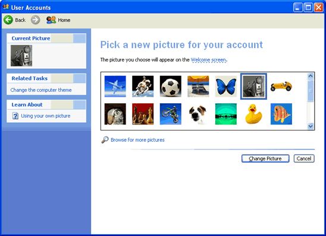

Vão se foderem

Print clássico do grande Lucas CRF extremamente puto com a galera da comunidade do cartola que infernizava a vida dele repostando suas fotos

Sdds de zuah de bike
Internauta anônimo sentindo falta de dias mais tranquilos em sua única preocupação era andar de bicicleta com os amigos, espero que ele tenha conseguido zuah com sua bike novamente
Fotos de perfil do windows XP
Assim era a tela de personalização de perfil no windows xp, seu mini perfil com nome e imagem apareciam no canto superior do menu iniciar, praticamente todas as fotos se tornaram clássico, porém meu favorito sempre foi o astronauta
Placa de vídeo antiga
As placas de vídeo gamer antigamente tinham um design extremamente diferente das placas minimalistas atuais, muitas tinham lindas artes no seu corpo, uma pena a arte de gpus ter se perdido com o tempo
Eae força jovem

Ilustre torcedor vascaíno mostrando que é um cara popular entre o pessoal da escola, grande força jovem